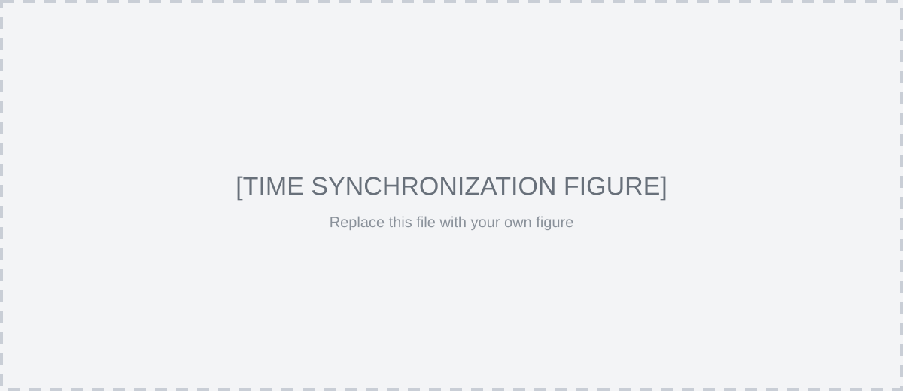
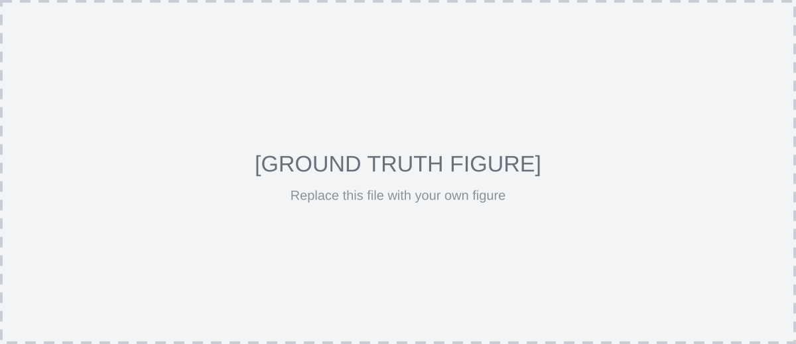
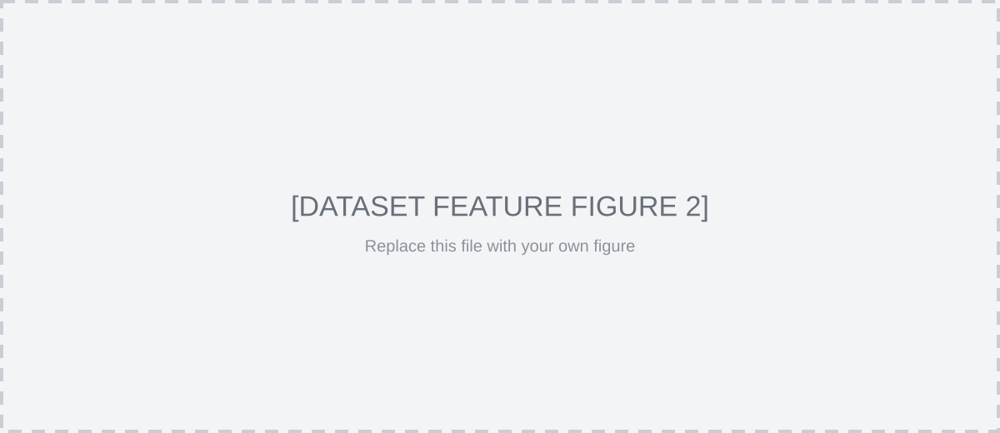

[DATASET / PAPER TITLE]
1[Affiliation 1], 2[Affiliation 2]
Abstract
[ABSTRACT PARAGRAPH 1]
[ABSTRACT PARAGRAPH 2]
[ABSTRACT PARAGRAPH 3]
System Overview
[SYSTEM OVERVIEW DESCRIPTION 1]
[SYSTEM OVERVIEW DESCRIPTION 2]

[GROUND-TRUTH / CALIBRATION / HARDWARE DESCRIPTION]

Dataset
The [DATASET NAME] dataset includes three essential attributes:
- [Attribute 1]: [DESCRIPTION]
- [Attribute 2]: [DESCRIPTION]
- [Attribute 3]: [DESCRIPTION]

Scenarios
[Scenario 1 Name]
[SCENARIO 1 DESCRIPTION]
[Scenario 2 Name]
[SCENARIO 2 DESCRIPTION]
[Scenario 3 Name]
[SCENARIO 3 DESCRIPTION]
[Scenario 4 Name]
[SCENARIO 4 DESCRIPTION]
[Scenario 5 Name]
[SCENARIO 5 DESCRIPTION]
[Scenario 6 Name]
[SCENARIO 6 DESCRIPTION]
[Scenario 7 Name]
[SCENARIO 7 DESCRIPTION]
[Scenario 8 Name]
[SCENARIO 8 DESCRIPTION]
Data format
[RAW DATA / ROS BAG / SENSOR FORMAT DESCRIPTION]
[POINT CLOUD / IMAGE / IMU FORMAT DESCRIPTION]
[DATASET_NAME]/ (click to view file structure)
[DATASET_NAME]/
├── sensor_data/
│ ├── [sequence_id]/
│ │ ├── [sensor_1]/
│ │ ├── [sensor_2]/
│ │ ├── camera/
│ │ └── imu/
│ ├── [sequence_id].bag
│ └── [sequence_id].zip
├── calibration_files/
│ └── [device_id].yaml
└── groundtruth/
├── map/
└── trajectory/
[ROS TOPICS / MESSAGE DESCRIPTION]
Download
[DOWNLOAD DESCRIPTION AND MIRROR INFORMATION]
| Sequence | Devices (Platform) | Total Size | Duration | Dist. | Difficulty | Rosbag |
|---|---|---|---|---|---|---|
| [Sequence_01] | [Device / Platform] | [-- GB] | [-- s] | [-- m] | [Easy / Medium / Hard] | Download |
| [Sequence_02] | [Device / Platform] | [-- GB] | [-- s] | [-- m] | [Easy / Medium / Hard] | Download |
| [Sequence_03] | [Device / Platform] | [-- GB] | [-- s] | [-- m] | [Easy / Medium / Hard] | Download |
| [Add more rows] | [...] | [...] | [...] | [...] | [...] | Download |
The dataset is available on [DOWNLOAD SERVICE].
Data Sequences
Standard Trajectories
[Scenario Group 1]
[trajectory_02]
[Scenario Group 2]
[trajectory_03]
[trajectory_04]
Co-captured Trajectories
[Scenario Group 3]
[trajectory_05]
[trajectory_06]
Online Benchmark
- [BENCHMARK SUBMISSION / REVIEW RULE]
- [AUTHOR-TESTED RESULT DESCRIPTION]
- [FUTURE BENCHMARK / HIDDEN GROUND TRUTH DESCRIPTION]
Additional information used by the methods
- ▣ [Sensor / Modality 1]
- ▣ [Sensor / Modality 2]
- ▣ [Sensor / Modality 3]
- ▣ [Sensor / Modality 4]
Citation
@misc{[citation_key],
title = {[PAPER / DATASET TITLE]},
author = {[AUTHOR LIST]},
year = {[YEAR]},
eprint = {[ARXIV ID]},
archivePrefix= {arXiv},
primaryClass = {[CATEGORY]},
url = {[URL]}
}